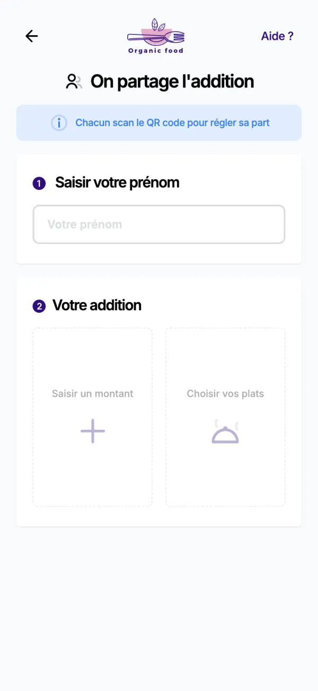

Dotworld
Trois produits pour un même client : un site pour créer son CV, une appli pour payer l'addition au restaurant, et un service pour résilier ses abonnements.


Un client, trois projets
Dotworld est une société basée à Lausanne, en Suisse, qui lance plusieurs services web. J'ai commencé avec eux en mars 2021, au début de mon activité de freelance.
J'ai travaillé sur CV Ninja (créer son CV en ligne), Twenty Pay (payer l'addition au restaurant) et Rezilli (résilier un abonnement).
Mon rôle : intégrer les maquettes en interfaces responsives, sur ordinateur et mobile, avec Vue.js ou Nuxt.js et Tailwind.css.
Créer son CV en ligne
Un site pour remplir son CV étape par étape, choisir un modèle et le télécharger.
- ModèlesCinq modèles de CV (Bordeaux, Lyon, Nantes, Nice, Toulouse) : intégration à partir des maquettes, variantes de couleurs, finitions. La taille du nom s'adapte à sa longueur, et les adresses e-mail longues passent à la ligne.
- SiteQuelques retouches sur le reste du site.
Le même CV fictif dans chaque modèle, affiché en local. Cliquez sur un CV pour l'agrandir.
Payer l'addition au restaurant
On scanne un QR code sur la table, on voit l'addition et on paie depuis son téléphone.
- AppliLes écrans du parcours : menu, plats, récapitulatif, partage de l'addition, paiement, avis et remerciement.
- SiteLe site vitrine pour les restaurants : sections démo avec vidéo, avantages, avis, FAQ et contact ; menu fixe, adaptation au mobile, pages légales.
L'appli



L'appli : accueil du restaurant, addition, partage et paiement
Le site vitrine
Résilier un abonnement
Un service en ligne qui prépare et envoie les lettres de résiliation d'un contrat ou d'un abonnement.
- IntégrationIntégration du design : formulaires (libellés animés, champs obligatoires), pages d'informations avec menu déroulant sur mobile, filtre par catégorie et par service, FAQ, fenêtres pop-up.
Accueil
Formulaire et bibliothèque
Captures faites en local, avec des données d'exemple.
Intégrer pour de vraies données
Sur les modèles de CV de CV Ninja, le rendu devait tenir quel que soit le contenu : un nom très long, une adresse e-mail qui déborde. J'ai appris à intégrer pour de vraies données, pas seulement pour la maquette.